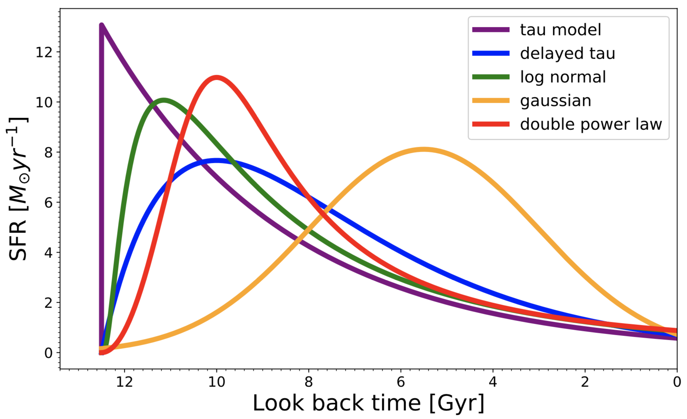

SED modeling¶
In piXedfit, the task of generating model SEDs is done by piXedfit_model module. The SED modeling uses the Flexible Stellar Population Synthesis (FSPS) package through the Python-FSPS as the interface to the Python environment. The FSPS package provides a self-consistent modeling of galaxy’s SED through a careful modeling of the physical components that make up the total luminosity output of a galaxy, which consist of stellar emission, nebular emission, dust emission, and emission from the dusty torus heated by the AGN. Since piXedfit_model module uses the FSPS model, every parameter (i.e., ingredient) available in the FSPS is also available in the piXedfit_model.
SSP model¶
For modeling a Simple Stellar Population (SSP), the FSPS provides several choices for the Initial Mass Function (IMF), isochrones calculation, and the stellar spectral libraries. The Chabrier et al. (2003) IMF, Padova isochrones (Girardi et al. 2000; Marigo et al. 2007; Marigo et al. 2008), and MILES stellar spectral library (Sanchez-Blazquez et al. 2006; Falcon et al. 2011} are used as the default set in the piXedfit_model, but in principle, all the choices available in the FSPS (python-FSPS) are also available in the piXedfit_model. In practice, SED fitting procedure demands model SEDs with a random set of \(Z\) rather than in a discrete set, as given by the isochrones. In this case, we choose an option in FSPS that allows interpolation of SSP spectra between \(Z\) grids. Users of piXedfit_model can choose from the 5 available choices of IMF that FSPS provides: Salpeter et al. (1955), Chabrier et al. (2003), Kroupa et al. (2001), van Dokkum et al. (2008), and Dave (2008).
FSPS uses the CLOUDY code (Ferland et al. 1998, 2013) for the nebular emission modeling. The implementation of CLOUDY within FSPS is described in Byler et al. (2017). In short, the modeling has three parameters: SSP age, gas-phase metallicity, and the ionization parameter, \(U\), which represents the ratio of the ionizing photons to the total hydrogen density. By default, the gas-phase metallicity is set to be equal to the model stellar metallicity, and \(U\) is fixed to 0.01. The user can also set them as free parameters in the fitting, preferentially if a constraining data is available (e.g., deep optical spectra). The modeling has incorporated the dust attenuation to the emission lines.
There are five options for the dust attenuation modeling in FSPS. We only accommodate two of them in piXedfit_model: Calzetti et al. (2000) and the two-component Charlot & Fall (2000) dust attenuation model. In brief, the Calzetti et al. (2000) assumes equal dust attenuation over all starlight regardless of the stellar ages, while Charlot & Fall (2000) assumes an extra attenuation for the light coming from young stars (typically younger than 10 Myr) which still reside in the birth-cloud. For the Calzetti et al. (2000) dust attenuation model, only one parameter is involved, \(\hat{\tau}_{2}\) which represents the dust optical depth. For the two-component Charlot & Fall (2000) model, there are three parameters involved: (1) \(\hat{\tau}_{1}\) controls normalization of the attenuation curve for the birth-cloud component, (2) \(\hat{\tau}_{2}\) controls the normalization of the attenuation curve for the diffuse interstellar medium (ISM) component, and (3) the power-law index \(n\) in the dust attenuation curve for the diffuse component (see Eq. 7 and 8 in Leja et al. 2017).
Choices for the SFH¶
piXedfit adopts the parametric star formation history (SFH) approach, which assumes a functional form for the SFH when generating the model SED of a Composite Stellar Population (CSP). In piXedfit_model, there are 5 choices of SFH available:
Tau model
\(SFR(t) \propto e^{-t/\tau}\)
The \(\tau\) represents the timescale for the declining of the star formation.
Delayed tau
\(SFR(t) \propto t e^{-t/\tau}\)
The \(\tau\) is a parameter that controls the duration of the star formation.
Log-normal
\(SFR(t) \propto \frac{1}{t} \exp \left( -\frac{(\ln(t)-T_{0})^{2}}{2\tau^{2}} \right)\)
The free parameters \(T_{0}\) controls the peak location, while \(\tau\) controls the duration of the star formation.
Gaussian
\(SFR(t) \propto \exp \left( -\frac{(t-T_{0})^{2}}{2\tau^{2}} \right)\)
The \(T_{0}\) represents the time when star formation reaches the peak, while the \(\tau\) controls the duration of the star formation.
Double power law
\(SFR(t) \propto \left[ \left(\frac{t}{\tau} \right)^{\alpha} + \left(\frac{t}{\tau} \right)^{-\beta} \right]^{-1}\)
The \(\alpha\) and \(\beta\) are the falling slope, and the rising slope, respectively. The \(\tau\) parameter controls the peak time.
All the \(t\) in the above equations represent the time since the start of star formation (i.e., age of the system, \(\text{age}_{\text{sys}}\)). The following figure shows examples of SFHs formed with the 5 SFH choices. All the model SFHs have the same age \(t\) of 12.5 Gyr and \(M_{*}=5.0\times 10^{10}M_{\odot}\). The other SFH parameters are: tau model [\(\tau=4.0\) Gyr], delayed tau [\(\tau=2.5\) Gyr], log-normal [\(\tau=1.0\) Gyr, \(T_{0}=1.3\) Gyr], Gaussian [\(\tau=2.5\) Gyr, \(T_{0}=7.0\) Gyr], and double power law [\(\tau=2.5\) Gyr, \(\alpha=2.0\) Gyr, \(\beta=2.0\) Gyr].
{kind=link}
Dust emission and AGN components¶
The dust emission modeling in FSPS assumes the energy balance principle, where the amount of energy attenuated by the dust is equal to the amount of energy re-emitted in the infrared (IR) (da Cunha et al. 2008). FSPS uses the Draine & Li (2007) dust emission templates to describe the shape of the IR SED. There are three parameters in the dust emission modeling: \(U_{\rm min}\), \(\gamma_{e}\), and \(Q_{\rm PAH}\). \(U_{\rm min}\) represents the minimum starlight intensity that illuminate the dust. This minimum starlight intensity is typically found in the diffuse ISM. \(\gamma_{e}\) represents the fraction of dust mass that is exposed to this minimum starlight intensity. \(Q_{\rm PAH}\) represents the fraction of total dust mass that is in the polycyclic aromatic hydrocarbons (PAHs).
For the modeling of emission from the dusty torus heated by the AGN, FSPS uses AGN templates from the Nenkova et al (2008a, b) CLUMPY models. The CLUMPY model uses radiative transfer techniques to approximate the SED from the clumpy dust torus medium which is illuminated by light from the AGN with a broken power-law spectrum. The CLUMPY AGN model is included in the FSPS based on some assumptions that are described in Leja et al. (2018). The modeling has two free parameters: \(f_{\rm AGN}\) which represents the total luminosity of the AGN, expressed as a fraction of the galaxy bolometric luminosity, and \(\tau_{\rm AGN}\) which represents the optical depth of an individual dust clump at \(5500\text{\normalfont\AA}\) in the dusty torus.
IGM absoption, redshifting, and convolving with filters¶
The piXedfit_model has two options for the IGM absorption: Madau (1995) and Inoue et al. (2014). After applying the IGM absorption, the effect of cosmological redshifting and dimming is then applied to the model spectra. After this process, the spectra is transformed into the observer frame flux density (\(f_{\lambda}\)). Typically, this calculation requires redshift information of the galaxy. Whenever provided, input redshift (if spectroscopic redshift is available) is used. Otherwise, redshift is set as a free parameter in the fitting. The calculation of the luminosity distance uses the cosmology package in the Astropy. The final step in generating model photometric SEDs is convolving the model spectra with the set of filter transmission functions. The current vesion of piXedfit has 163 photometric filters of ground-based and space-based telescopes. The user can also add a filter transmission function using add_filter() function in filtering module.